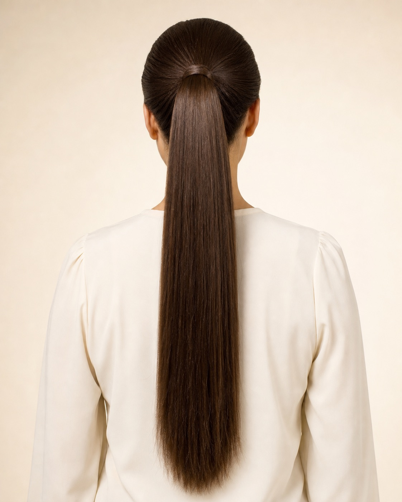
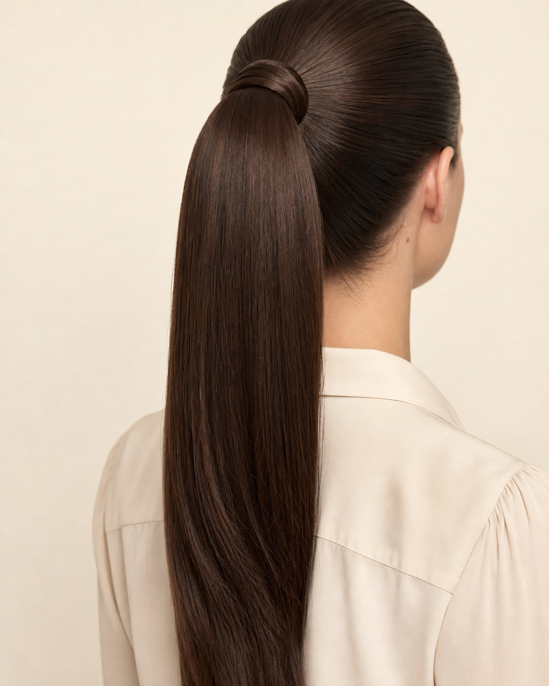
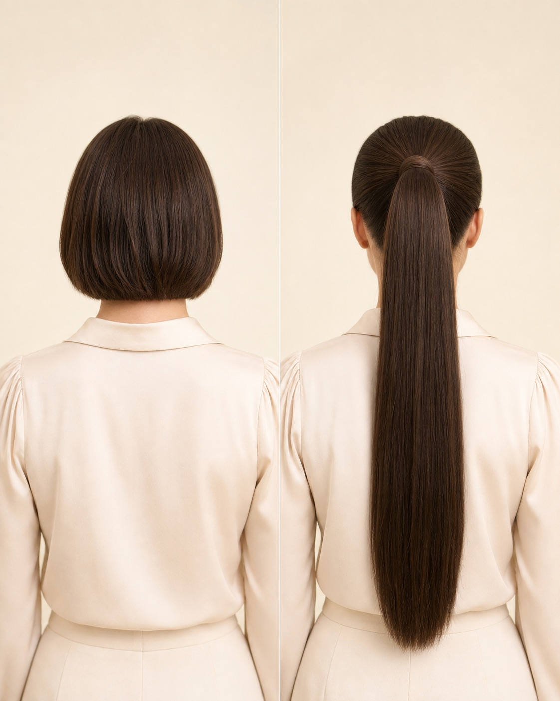
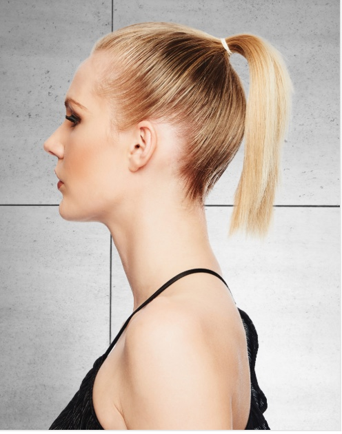
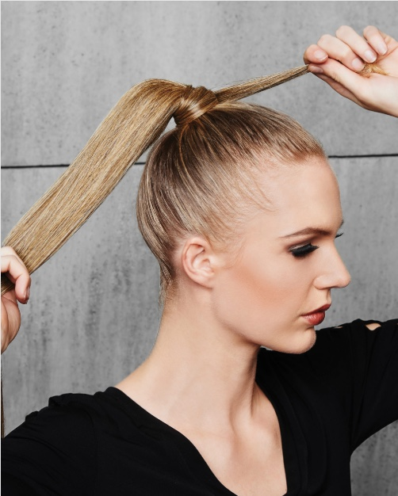
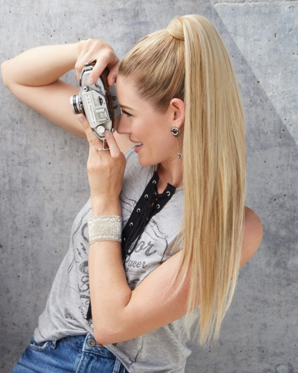

Length and fall
Approve the finished measurement point, installed fall, density distribution, end shape and production tolerance.







DS HAIR · Synthetic Wigs & Hairpieces
PRODUCT CODE · DS-HPC-SY-008
A long straight synthetic ponytail reference for professional buyers developing quick length and polished high-pony ranges. The official source documents a 25-inch wrap-around direction and a heat-friendly synthetic styling direction. For DS-HPC-SY-008, MOQ is 30 pcs/color, the unit-price range is US$2.85–3.35 and lead time is 3–21 days. Production fibre, weight, base, hardware, colour set, heat protocol, packing and tolerances remain subject to sample approval and written specification.
Commercial terms and unconfirmed technical details are provided only after specification review.
BUILD YOUR BUYING BRIEF
These controls prepare an enquiry; they do not indicate live stock. Final feasibility, MOQ, price and lead time are confirmed in writing.
PRIMARY COLOUR SYSTEM
Screen colour is for initial selection only. Final shade approval should use a physical colour ring or confirmed sample. Where the source chart has no published shade code, Ref numbers are temporary website identifiers only.
REQUEST A PHYSICAL COLOUR KIT →BUYER ANSWER
A long straight synthetic ponytail reference for professional buyers developing quick length and polished high-pony ranges. The official source documents a 25-inch wrap-around direction and a heat-friendly synthetic styling direction. For DS-HPC-SY-008, MOQ is 30 pcs/color, the unit-price range is US$2.85–3.35 and lead time is 3–21 days. Production fibre, weight, base, hardware, colour set, heat protocol, packing and tolerances remain subject to sample approval and written specification.
EVALUATION POINTS
Use a representative sample to turn visual impressions into an approved, repeatable product reference.
Approve the finished measurement point, installed fall, density distribution, end shape and production tolerance.
Test base fit, hardware, wrap-strand concealment and secure hold through repeated fitting cycles.
Approve hand, shine, straightness, tangling, end behaviour and the exact tested care protocol for the selected production fibre.
Use the rear-view comparison to approve the intended transformation while treating the image as a styling direction rather than a construction specification.
Check that the support form, net and retail pack preserve the long straight fall without creasing or permanent deformation.
SIMILAR PRODUCT COMPARISON
These are separate development directions. Confirm the attachment and finished result against an approved sample.
Scroll horizontally to compare methods →
| Buyer question | 25-Inch Straight Wrap-Around | 21-Inch Straight Claw Clip | 12-Inch Coily Drawstring | 26-Inch Braiding Ponytail |
|---|---|---|---|---|
| Primary result | Long polished straight pony | Quick straight fall | Compact coily volume | Integrated braid or updo length |
| Reference attachment | Wrap-around direction | Claw clip | Pocket base + drawstring | Elastic band + wrap section |
| Best brief detail | Length, straightness, base and wrap concealment | Clip geometry and hold | Pocket size, cinch hold and curl | Braid pattern and band recovery |
| Published imagery | Exterior, face-free result and before/after | Product and attachment reference | Product and coily result | Product and braided back view |
Do not infer hidden hardware or construction from the finished wearing result; confirm it on the approved sample.
THE DS HAIR DIFFERENCE
We compare the way a project is managed—not make unverified statements about another supplier’s hair.
SPECIFICATION STATUS
DS HAIR does not publish assumptions as product specifications. Open items are confirmed against the selected supply batch and quotation.
OEM / PRIVATE LABEL
PROFESSIONAL PRODUCT KNOWLEDGE
Practical guidance for salons, distributors and private-label teams. Product-specific claims still require sample approval.
It is a removable ponytail hairpiece fitted over a secured natural ponytail and finished with a separate hair section wrapped around the join. Exact production hardware still requires sample approval.
Record the measurement point, installed fall, grams, density distribution, straightness, ends, tangling and recovery after packing.
It communicates the intended transformation from short hair to a long straight ponytail without publishing an identifiable face or implying hidden construction details.
For DS-HPC-SY-008, MOQ is 30 pcs/color, unit price is US$2.85–3.35/pc and lead time is 3–21 days. Final order total and delivery schedule follow the written specification.
Retain an approved sample and written specification covering fibre, grams, length, base, hardware, wrap, colour, care wording, packaging and QC tolerances.
RELATED DEVELOPMENT DIRECTIONS
These are enquiry pathways, not live-stock listings. Each product requires its own specification and sample reference.

Compare the wrap-around direction with a shorter straight fall built around a claw-clip attachment.
DISCUSS THIS PRODUCT →
Compare a long straight finish with a compact coily pocket-base drawstring hairpiece.
DISCUSS THIS PRODUCT →
Compare the polished finished ponytail with an elastic-band attachment designed for braid and updo development.
DISCUSS THIS PRODUCT →BUYER QUESTIONS
Yes. DS-HPC-SY-008 is presented as a B2B development reference with a 30 pcs/color MOQ, US$2.85–3.35 unit-price range and 3–21 day lead time. Final order details follow the approved written specification.
The official source documents a wrap-around ponytail direction. Production base, hardware, wrap-strand construction, stitching and holding performance require sample approval.
The source documents a 25-inch length and long straight finish. Finished measurement, grams, density distribution, end shape and tolerances require approval.
The seven-image set combines exterior and rear-view references with three user-approved model images showing the short-ponytail starting point, the wrap step and the long finished result.
Colour matching and private-label presentation can be reviewed against physical references, artwork and quantity requirements. Available options and packing details require written confirmation.
REFERENCE · DS-HPC-SY-008
Send the target wearer, installed length, grams, base and wrap requirement, colour reference, fibre requirement, packaging brief and estimated quantity so DS HAIR can prepare the correct sample and quotation path.
SEND YOUR BUYING BRIEF